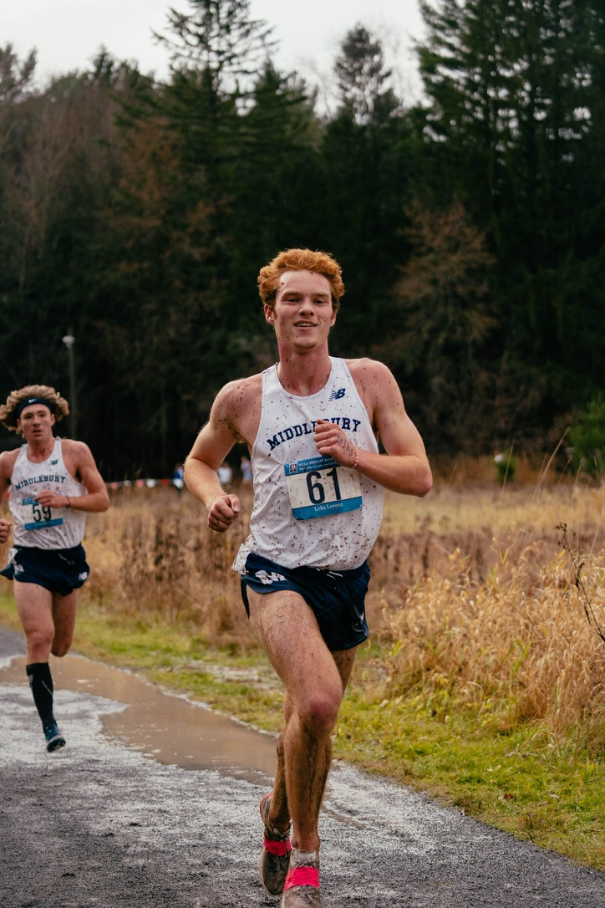
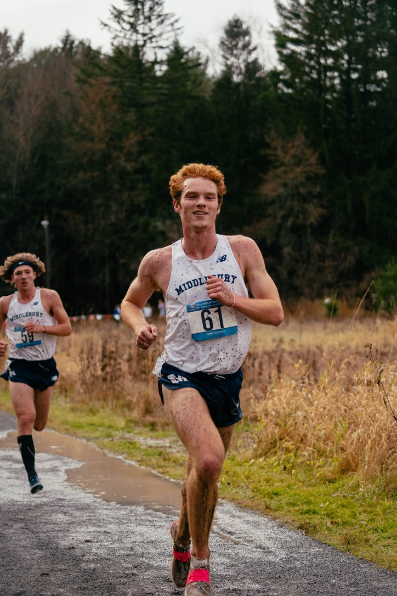

about me

 


Hey! Luke here.
I’m currently working at Epic Systems in Madison, Wisconsin, as an inpatient software developer. I truly believe that human-centric care is the most meaningful work, and in the realm of technology, it's essential to separate dichotomous thinking and recognize its limitations. At the end of the day, it’s about the capillaries and corpsicles, not the bits and bytes.
Anyways, here’s my less important and objective list of things that are good:
- Running / Biking - Ran cross country / track at Middlebury. Slow twitch to the bone.
- Reading / Writing - Fiction, mostly
- Sunrises - who needs sunsets?
- Mountains
- Guitar and tunes
- Black Coffee
If you're interested, ping my email!